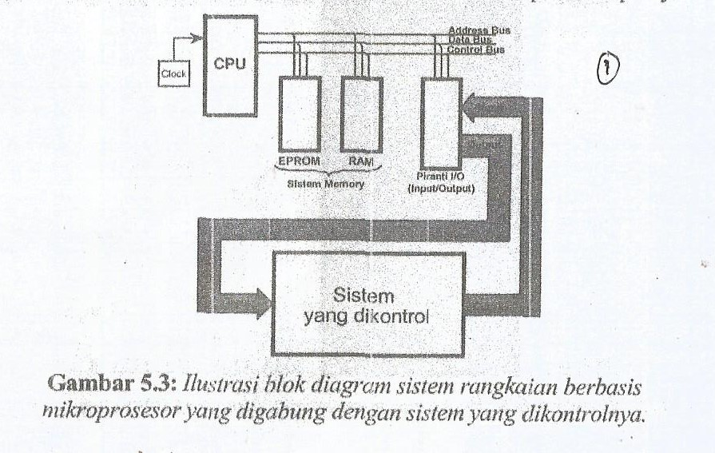
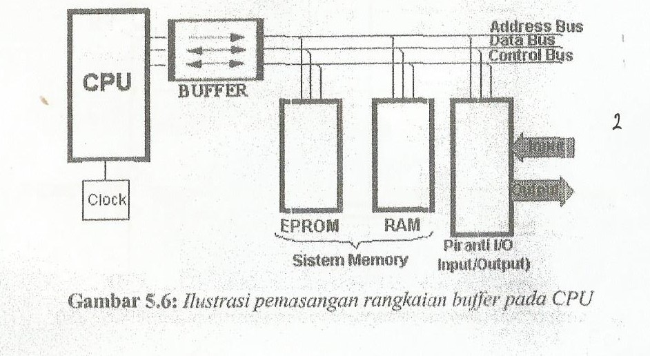
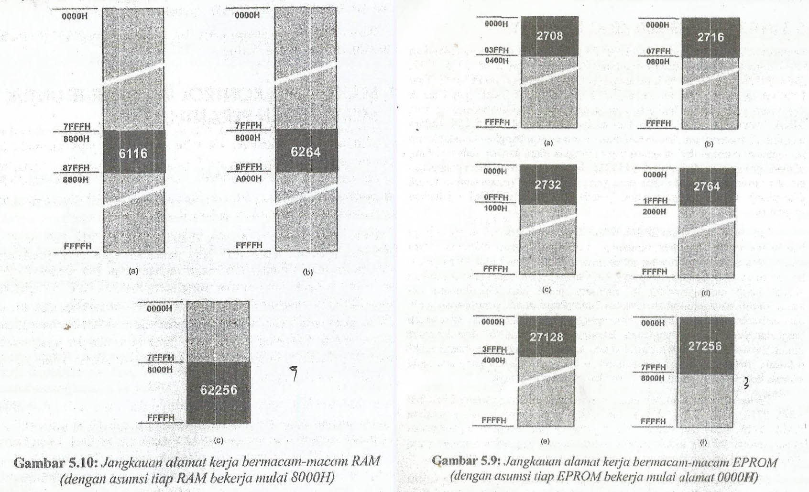
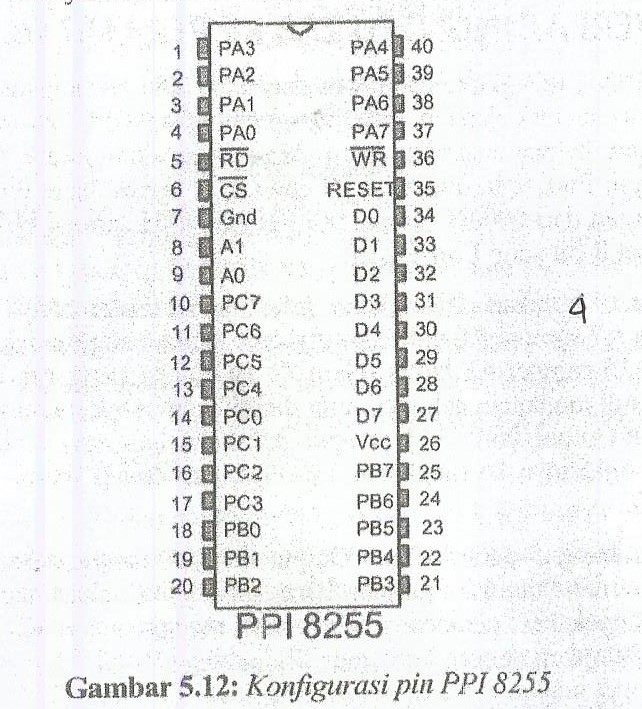
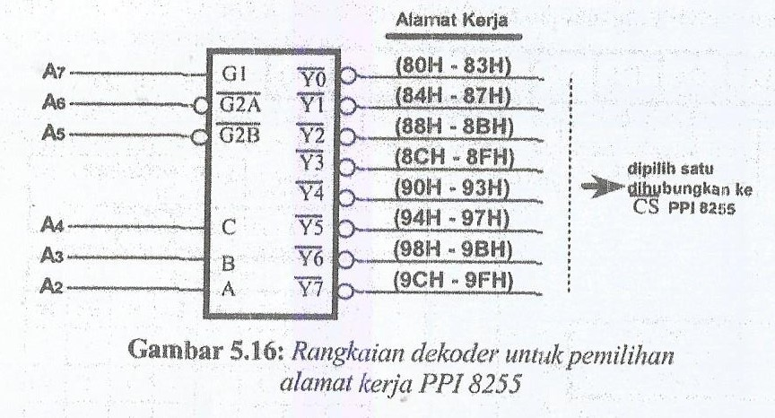

A. Pendahuluan
Fenomena sistem control dalam pengertian keteknikan bermakna suatu sistem yang mempunyai peranti input dan ouput. Peranti input befungsi sebagai peranti penerima dari system yang dikontrol, sedangkan peranti output berfungsi sebagai pemberi aksi kepada system yang dikontrol.
Dalam praktik, terminal input maupun output system yang dikontrol dapat beroperasi pada bermacam besaran listrik maupun fisika. Besaran ini harus diterjemakan ke dalam besaran logika bila dihubungkan ke system rangkaian berbasis mikroprosesor. Peranti penerjemah ini disebut interface ke peranti sensor dan actuator. Peranti sensor adalah nama yang digunakan untuk menyebut peranti output dari sistem yang dikontrol, sedangkan peranti actuator adalah peranti inputnya
B. Lingkup Perancangan Sistem Minimun CPU Z80
CPU Z80 memiliki 8-bit data dan 16-bit alamat. Sehingga dapat dirangkai ke semua komponen memori standar. Kemampuan pengalamatan memori maksimun secara langsung adalah sebesar 64KB.
1. Rangkaian Clock
Untuk system rangkaian bebasis cpu z80, dapat menggunakan rangkaian clock yang telah terintegrasi. Chip kristal yang berbentuk mirip IC umumnya berkaki 4 buah. Di dalamnya, telah menyatu peranti-peranti analog pendukung rangkaian. Dengan menghubungkan dua buah kaki diantara ground dan vcc, output kristal ini dapat dihubungkan langsung ke pin clock CPU Z80
2. CPU Bus Buffer
Bila CPU dihubungkan ke berbagai macam peripheral dengan jumlah yang banyak maka dibutuhkan sebuah buffer untuk menyokong kinerja CPU agar dapat memberikan logika yang valid. Untuk perancangan rangkaian perlu mempertimbangkan "fan-in" dan "fan-out".
C. Interfacing Z80 ke IC Memory
Pemilihan suatu EPROM atau RAM tidak didasarkan hanya pada bagaimana membuat sistem rangkaian memori selengkap mungkin tetapi juga berapa besar memori yang sebenarnya kita butuhkan untuk menyelesaikan permasalahan kontrol elektronik itu. Bila kita menggunakan EPROM 27256 dan RAM 62256 kita tidak perlu memasang decoder khusus untuk memeiskana kerja kedua ic memory tersebut. Cukup dengan memanfaatkan a15 pada CPU Z80 yang dihubungkan ke CS masing-masing IC memory sehingga kedua memory tersebut akan bekerja pada alamat yang terpisah. 32KB pertama untuk EPROM, dan 32KB kedua untuk RAM.
D. Manipulasi Control Read/Write untuk Memory dan Peranti I/O
Proses pembacaan data yang dilakukan CPU Z80 tidak saja berlaku bagi memory, tetapi juga untuk peralatan input port. Berdasarkan diagram pewaktuan Read/Write memory dan I/O Read/Write dapat dilihat bahwa pengaktifan instruksi yang menyebabkan CPU menghubungi memory (EPROM maupun RAM) akan mengaktifkan MREGQ dan RD atau WR sedangkan IORQ (input/output request) tidak aktif. Sebaliknya untuk proses membaca data yang berasal dari input port dengan mengeksekusi intgruksi IN, maka yang aktif adalah IORQ dan RD tetapi MREQ tidak demikian.
E. Interfacing CPU Z80 ke peranti I/O
Pada dasarnya menghubungkan bus dari CPU Z80 ke rangkaian input atau output port identik dengan cara menghubungkan CPU ke memori, intruksi yang dapat digunakan untuk I/O Port yaitu IN dan OUT, hanya dapat dikenakan pada alamat dari 0000H sampai 00FFH.
1. Programammble Peripheral Interface (PPI) 8255
Adalah suatu paralel I/O dalam satu chip serbaguna yang fungsi I/O dapat diprogram. Dibuat oleh intel untuk digunakan Bersama dengan mikroprosesor buatan intel.
2. Interfacing ke PPI 825
Memilih alamat kerja PPI 8255 sesuai yag diinginkan dapat dilakukan dengan merangkaikan sebuah decoder seperti gambar dibawah.
